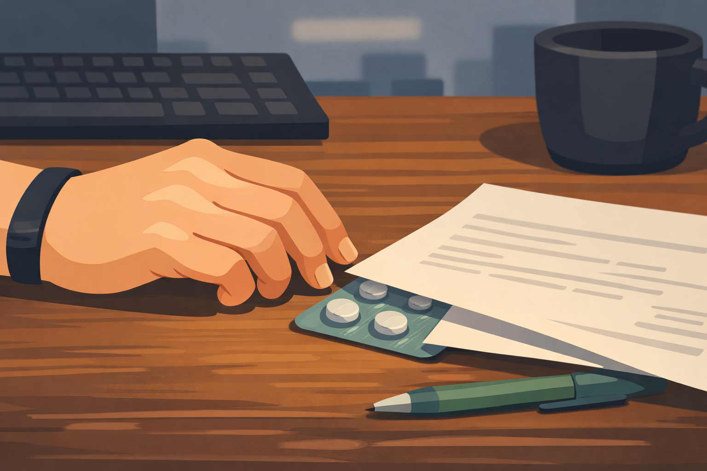
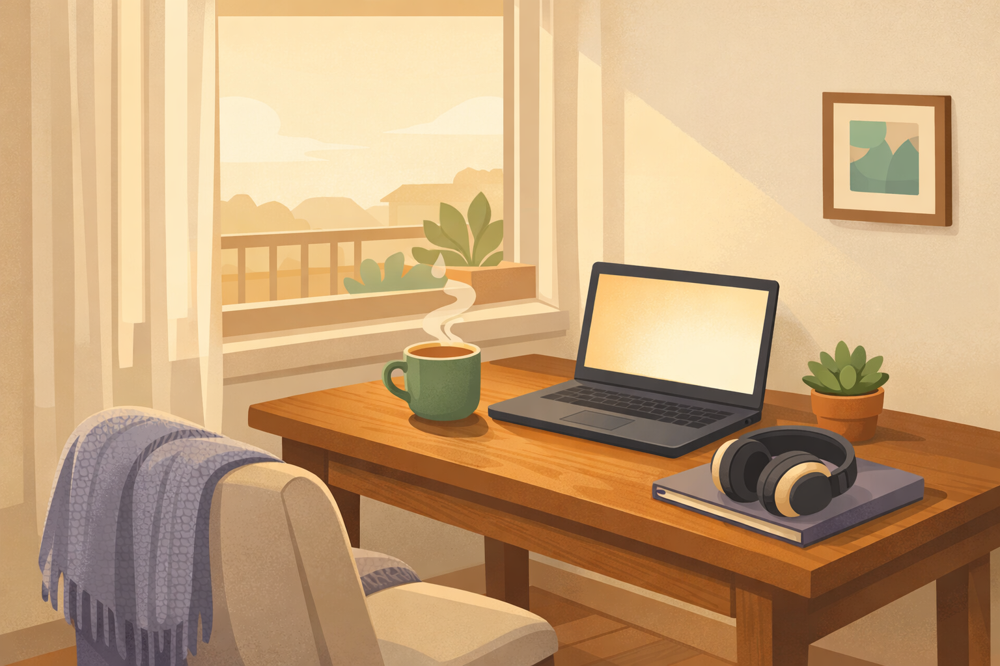

By Rustam Iuldashov
30 years lived experience with chronic migraine | Sources: 20 peer-reviewed references including Cephalalgia, Journal of Clinical Medicine, Current Pain and Headache Reports, and Goffman’s foundational work on stigma | Last updated: March 8, 2026
Medical Review: This content is based on peer-reviewed research from Cephalalgia, Journal of Clinical Medicine, Current Pain and Headache Reports, The Journal of Headache and Pain, Frontiers in Public Health, and Proceedings of the ACM on Human-Computer Interaction.
Important Notice: This article is for informational purposes only and does not replace professional medical advice. The author is not a licensed physician or healthcare professional. Always consult your doctor before making changes to your treatment plan.
Key Takeaways
- 89% of migraine-related work productivity loss comes from presenteeism — people working through attacks — not from absences[1]
- During a migraine attack, people function at roughly 42–50% capacity yet remain at their desks[2]
- 62% of people with migraine feel the condition negatively affects their employer’s assessment of their value[5]
- Migraine carries more social stigma than dementia, Parkinson’s, or stroke[5]
- Workplace migraine education programs increase productivity by 29–36% for the entire team[8]
- Flexible scheduling, remote work options, and adjusted lighting are low-cost accommodations that benefit all employees[9, 10]
- If migraine is impacting your work life, talk to a healthcare provider about preventive treatment and workplace accommodation options
I locked the door. Pulled the blinds. Lowered myself to the floor.
Tuesday afternoon. Department head. Inbox full, a meeting I was supposed to chair at three. None of it mattered anymore. What mattered was the vise tightening around the left side of my skull — slow, deliberate, merciless. The fluorescent tube above me buzzed like something alive.
I swallowed two pills. Pressed my palms against my closed eyes. Tried to sleep on the carpet of the office where I was supposed to be in charge.
Three hours.
Not resting. Not recovering. Just waiting — for the pain to loosen its grip enough for me to stand up and pretend again.
Pretend. That’s the word that defined my professional life for decades. And if you live with migraine, it probably defines yours too.
The Performance Nobody Sees
You know this act. The measured smile when the pain hits seven out of ten. The careful nod in a meeting when you can’t process a single sentence being spoken. The walk to the restroom — not because you need the restroom, but because you need sixty seconds of darkness behind a locked stall door.
This isn’t anecdote. It’s epidemiology. Eighty-nine percent of migraine-related productivity loss comes not from sick days but from presenteeism — the medical term for showing up while your brain is on fire.[1] During an attack, people with migraine function at roughly 42 to 50 percent of their normal capacity. Yet they stay at their desks.[2] A 2024 study in Cephalalgia found that migraine-related presenteeism accounts for an estimated 16% of total workforce presenteeism in the United States.[3] Sixteen percent. One condition. One invisible condition.
Why do we stay?
Because leaving feels like admitting something we’ve been taught to deny.
The Scarlet Letter You Can’t See
In 1963, sociologist Erving Goffman introduced a distinction that would shape decades of stigma research. He separated the discredited — people whose stigma is visible to the world — from the discreditable — people whose stigma is hidden, who must decide, moment by moment, whether to reveal it.[4] A wheelchair is discredited. Migraine is discreditable. And the discreditable carry a unique burden: the exhausting, endless arithmetic of concealment. If I tell them, will they promote someone else? If I call in sick, will they think I’m faking? If they see me wince, will they call it just a headache?
I never told anyone. Not once. Not my team, not my boss, not a single colleague — in years of office work. The fear wasn’t paranoia. It was pattern recognition, often reinforced by what we now call medical gaslighting in and out of the office.
A 2024 survey by the European Migraine & Headache Alliance — the largest study of its kind, spanning 4,210 respondents across 17 European countries — found that 62% of people with migraine believe their condition negatively affects how employers assess their professional value.[5] More strikingly, the survey revealed that migraine carries greater social stigma than dementia, Parkinson’s disease, or stroke.[5] Diseases with brain scans and clear diagnostic markers command sympathy. A disease whose primary evidence is the patient’s word commands suspicion.
A 2021 study analyzing nearly 1,700 Reddit posts from people with invisible chronic conditions found elaborate workplace concealment strategies: timing bathroom breaks to coincide with natural pauses, pre-positioning medication in pockets to avoid being seen taking pills, fabricating explanations for visible symptoms like pallor or squinting.[6]
These aren’t quirks. They are survival tactics, refined under pressure, rehearsed until automatic.
A 2024 review in the Journal of Clinical Medicine identified three distinct layers of migraine stigma.[7] Public stigma: the colleague who rolls their eyes. Structural stigma: the HR policy that doesn’t recognize migraine as a reason for accommodation. And internalized stigma — the most corrosive layer of all. It’s the moment you lie on the floor of your own office, in pain that would put most people in bed, and think to yourself: Stop being dramatic. Other people handle this. What’s wrong with you?
Nothing is wrong with you. Something is wrong with a culture that forces you to ask that question, often leading to what I call the guilt epidemic among sufferers.

The Loop That Tightens
Here is where it gets clinical.
A 2024 cohort study in Cephalalgia found that migraine severity is significantly associated with occupational burnout — even after researchers controlled for depression and anxiety.[3] The mechanism isn’t mysterious. It’s a loop. Migraine causes disability. Disability triggers guilt. Guilt amplifies stress. Stress triggers migraine. The researchers specifically identified internalized stigma as a driver: the pressure to work through symptoms, to avoid being perceived as unreliable, fuels the presenteeism that deepens the burnout.[3]
⚠️ When to Seek Help
If migraine is causing you to miss work regularly, if you find yourself hiding symptoms from colleagues and loved ones, or if the cycle of pain, guilt, and stress is affecting your mental health — please talk to a healthcare provider. You may benefit from preventive treatment, workplace accommodations, or both.
Migraine that significantly impacts your ability to function deserves professional evaluation, not silence. Having a reliable migraine toolkit can also provide a sense of agency in these moments.
I lived inside this loop for years. The morning after that Tuesday on the floor, I arrived at 8 a.m. sharp. Shirt pressed. Coffee in hand. Nobody asked where I’d been the afternoon before. Nobody noticed. I told myself that was a victory.
It wasn’t a victory. It was the loop tightening.
What I Want You to Know
If I could stand in any conference room in the world and say what 30 years of migraine have taught me, it would be this:
The person across the table may be mid-attack right now. They are not lazy. They are not fragile. They are performing a feat of endurance that is completely invisible to you — and that invisibility is precisely the problem.
Research shows that workplace education programs about migraine are associated with a 29 to 36 percent increase in productivity — not just for the individual, but for the entire team.[8] One study found that a single workplace management program combining education and clinical support reduced absenteeism by more than 50 percent.[8] The accommodations that help us — flexible scheduling, reduced fluorescent lighting, a quiet room to retreat to, the option to turn off a camera during a video call — cost almost nothing and benefit every brain in the building.[9, 10]
We don’t want special treatment. We want to work. We want to contribute, to build, to matter. We just need a little more grace when the pain arrives — and it always arrives without an appointment. One of the first steps toward that grace is understanding triggers and realizing they aren't failures of character.
The Stage Changes
I stopped performing. Not because I found courage. Because I changed the stage.
Moving to remote, independent work was the most transformative decision I’ve made for my migraine. Not because the attacks stopped — they didn’t. Because the hiding stopped. When you work from your own space, no one watches you close your laptop and lie down. No one measures your bathroom breaks. There is no fluorescent battlefield. No performance to maintain.
A 2024 study noted that modern work models — remote, hybrid, flexible — may offer people with migraine significantly more productive ways to participate in the workforce by removing environmental triggers and giving individuals control over their conditions.[3] A 2021 scoping review confirmed that flexible scheduling and the ability to work from home are among the most effective accommodations for maintaining productivity.[8] A cross-sectional study of 284 teleworkers during the pandemic found that people with migraine who used adaptive coping strategies in their home environments reported better management of both frequency and intensity.[11]
I no longer depend on anyone’s understanding. And here is the paradox: that independence made it easier to speak openly about migraine. Speaking from choice is profoundly different from speaking from fear.

The Confession
This article is my conference room confession.
There was no dramatic moment. No standing up in a meeting, no tearful revelation. Just decades of silence, and then — slowly — the decision to stop being silent. Not because the world became safer. Because I did.
Millions of people will walk into offices tomorrow carrying invisible pain. Most will say nothing. Some will lock their doors and lower themselves to the floor, hoping three hours will be enough. They’ll get up, straighten their clothes, and pretend.
If you’re one of them — I see you. You are not weak. You are not exaggerating. And you owe no one an explanation for a neurological condition you didn’t choose.
But if you find the right moment to speak, speak. Not for them.
For you.
⚕️ Important Medical Disclaimer
This article is for informational and educational purposes only and does not constitute medical advice, diagnosis, or treatment. The author, Rustam Iuldashov, is not a licensed physician, neurologist, or healthcare professional. He is a patient advocate with 30 years of personal experience living with chronic migraine.
All clinical claims in this article are sourced from peer-reviewed research published in indexed medical journals. Study designs and sample sizes are noted where applicable.
Always consult a qualified healthcare provider for questions about your individual health, migraine treatment, or medication decisions.
If migraine is significantly affecting your work performance, career decisions, or mental health, please seek professional evaluation. Workplace stigma is real, but effective treatment and accommodation options exist. This content was last reviewed for accuracy on March 8, 2026.
References
- Begasse de Dhaem O, Burch R. “Migraine in the workplace.” Medical Clinics of North America, 106(2):301–321 (2022). doi:10.1016/j.mcna.2021.12.004. Study design: Narrative review.
- Legg RF, et al. “The impact of migraine and the effect of migraine treatment on workplace productivity in the United States and suggestions for future research.” Pharmacoeconomics, 27(5):365–378 (2009). doi:10.2165/00019053-200927050-00002. Study design: Systematic review. n=15 studies.
- Peles I, Sharvit S, Zlotnik Y, et al. “Migraine and work — beyond absenteeism: Migraine severity and occupational burnout — A cohort study.” Cephalalgia, 44(11) (2024). doi:10.1177/03331024241289930. Study design: Prospective cohort.
- Goffman E. Stigma: Notes on the Management of Spoiled Identity. New York: Simon & Schuster (1963). Study design: Foundational sociological theory.
- European Migraine & Headache Alliance (EMHA). “Migraine & Stigma Survey: Highlights & Conclusions.” EMHA / The Migraine Trust (2024). Study design: Cross-sectional survey. n=4,210 across 17 European countries.
- Sefcik JS, et al. “The Work of Workplace Disclosure: Invisible Chronic Conditions and Opportunities for Design.” Proceedings of the ACM on Human-Computer Interaction, 5(CSCW1):1–29 (2021). doi:10.1145/3449166. Study design: Qualitative analysis. n=1,727 Reddit posts.
- Casas-Limón J, Quintas S, López-Bravo A, et al. “Unravelling Migraine Stigma: A Comprehensive Review of Its Impact and Strategies for Change.” Journal of Clinical Medicine, 13(17):5222 (2024). doi:10.3390/jcm13175222. Study design: Narrative review.
- Begasse de Dhaem O, Gharedaghi MH, Bain P, et al. “Identification of work accommodations and interventions associated with work productivity in adults with migraine: A scoping review.” Cephalalgia, 41(6):680–696 (2021). doi:10.1177/0333102420977852. Study design: Scoping review. n=26 articles (24 studies).
- Migraine At Work Coalition / IHS Global Patient Advocacy Coalition. “Migraine Accommodations Benefit Brain Health for All Employees.” (2022). Study design: Expert consensus / advocacy resource.
- Job Accommodation Network (JAN). “Migraines: Accommodation and Compliance Series.” U.S. Department of Labor, Office of Disability Employment Policy (2024). Study design: Expert consensus / policy resource.
- Houle M, Ducas J, Lardon A, et al. “Headache-related clinical features in teleworkers and their association with coping strategies during the COVID-19 pandemic.” Frontiers in Public Health, 11:1303394 (2023). doi:10.3389/fpubh.2023.1303394. Study design: Cross-sectional. n=284.
- Sakai F, et al. “Disability, quality of life, productivity impairment and employer costs of migraine in the workplace.” The Journal of Headache and Pain, 22:29 (2021). doi:10.1186/s10194-021-01243-5. Study design: Cross-sectional. n=2,458.
- Riggins N, Paris L. “Legal Aspects of Migraine in the Workplace.” Current Pain and Headache Reports, 26:863–869 (2022). doi:10.1007/s11916-022-01095-x. Study design: Legal review.
- Seng EK, Shapiro RE, Buse DC, et al. “The unique role of stigma in migraine-related disability and quality of life.” Headache, 62:1354–1364 (2022). doi:10.1111/head.14401. Study design: Cross-sectional (OVERCOME study).
- Quinn DM, Earnshaw VA. “Understanding concealable stigmatized identities: The role of identity in psychological, physical, and behavioral outcomes.” Social Issues and Policy Review, 5(1):160–190 (2011). doi:10.1111/j.1751-2409.2011.01029.x. Study design: Review.
- Hatzenbuehler ML, Phelan JC, Link BG. “Stigma as a Fundamental Cause of Population Health Inequalities.” American Journal of Public Health, 103(5):813–821 (2013). doi:10.2105/AJPH.2012.301069. Study design: Theoretical framework.
- Link BG, Phelan JC. “Conceptualizing Stigma.” Annual Review of Sociology, 27:363–385 (2001). doi:10.1146/annurev.soc.27.1.363. Study design: Theoretical framework.
- Parikh SK, Young WB. “Migraine: Stigma in society.” Current Pain and Headache Reports, 23:8 (2019). doi:10.1007/s11916-019-0743-7. Study design: Review.
- Bam A. “Invisibility, stigma and workplace support: Experiences of individuals with chronic disorders.” SA Journal of Human Resource Management, 23 (2025). doi:10.4102/sajhrm.v23i0.2672. Study design: Qualitative.
- Lui H, et al. “Conceptualizing mental health stigma in organizational settings: a sociolinguistic perspective.” BMC Psychology, 12:756 (2024). doi:10.1186/s40359-024-02205-z. Study design: Qualitative. n=23 interviews.

How We Create Content
- Peer-reviewed sources only. This article cites Cephalalgia, Journal of Clinical Medicine, Current Pain and Headache Reports, The Journal of Headache and Pain, Headache, Frontiers in Public Health, American Journal of Public Health, Annual Review of Sociology, BMC Psychology, and Proceedings of the ACM.
- Study transparency. Study design and sample sizes noted for all clinical references.
- Source verification. All claims backed by numbered references with DOI links.
- Experience + Science. 30 years personal migraine experience combined with peer-reviewed evidence.
- Regular updates. Articles reviewed when significant new research emerges.
- No conflicts of interest. No funding from pharmaceutical companies, corporate wellness providers, or HR technology platforms.
You Deserve to Be Understood. Start with Understanding Yourself.
Migraine Companion helps you track attacks, identify workplace triggers, and build the personal evidence that makes conversations with employers — and doctors — more effective.
Last reviewed: March 2026
Next scheduled review: September 2026